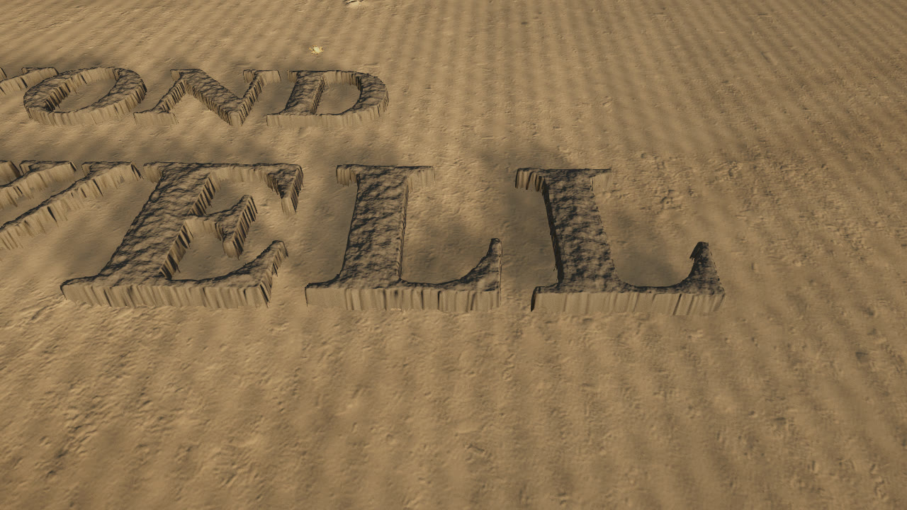
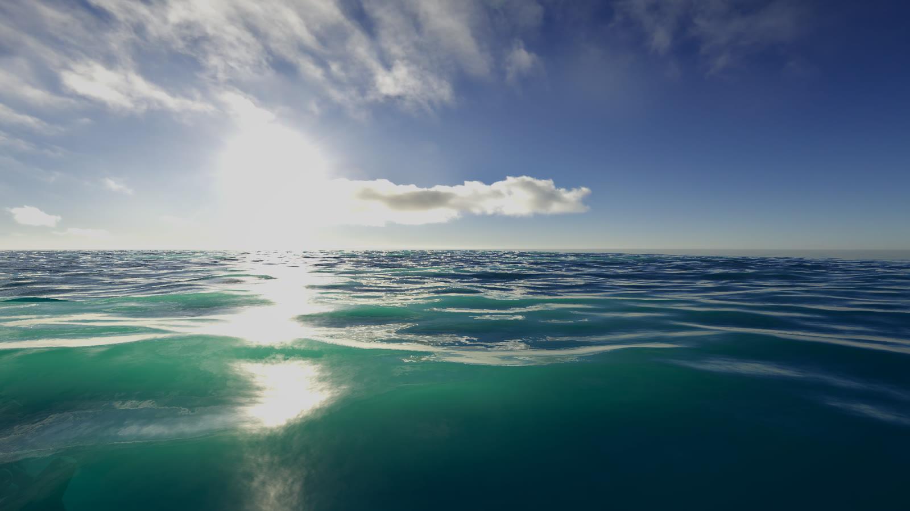
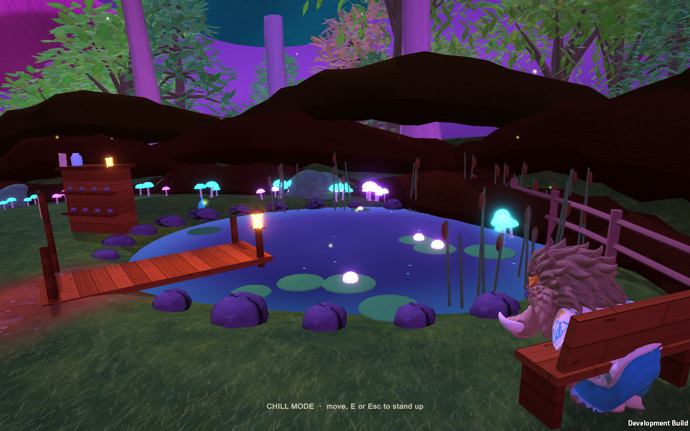
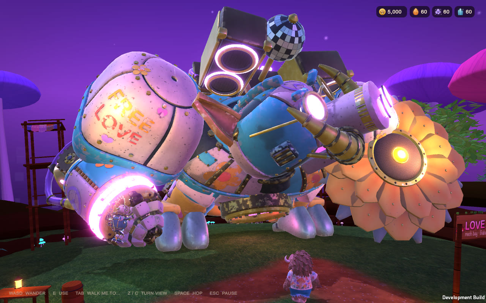
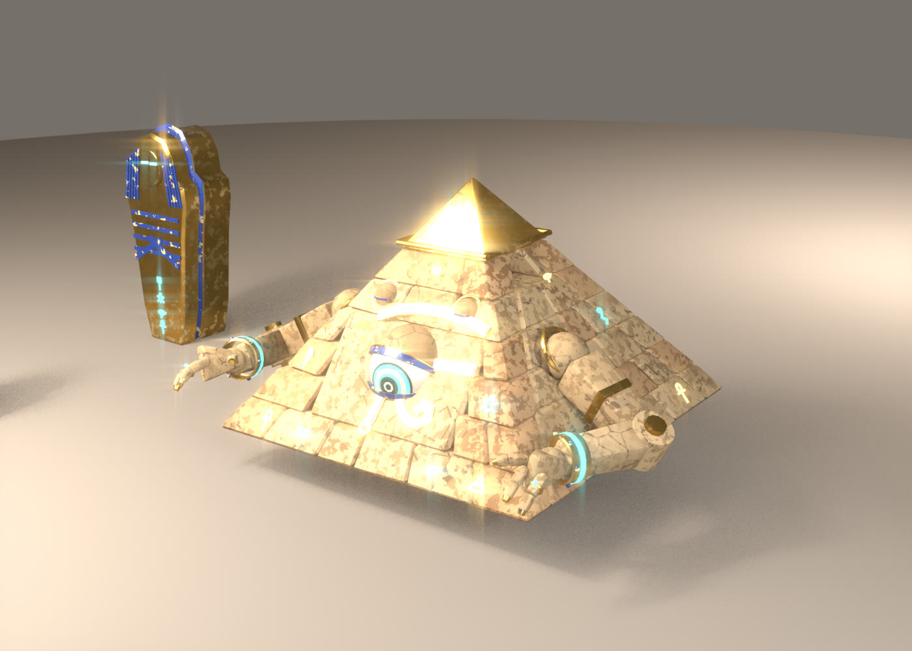
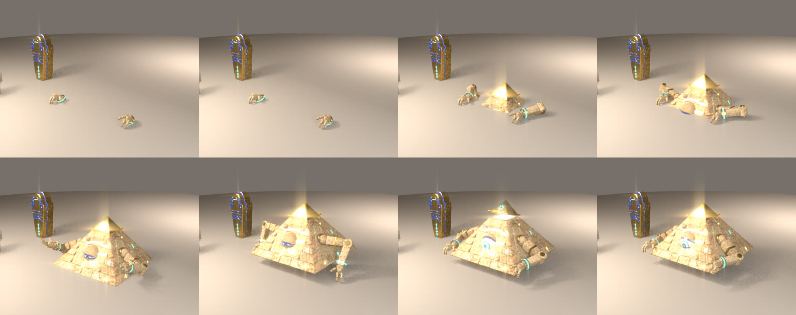
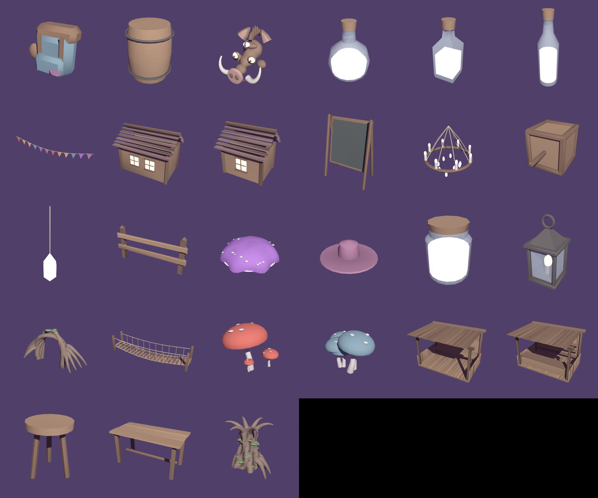

Game creator · 3D modeller · AI-agent director
I design games and direct the AI agents that build them.
I'm Matthew Klanfer. I write the concept, story and art direction, build the characters in Blender, and play-test every build. AI coding agents (Claude Code, Codex and Grok) write most of the code under my direction. On this page are selected moments from my two Unity games in development, all captured in-engine.
- Unity 6 · URP
- C#
- Blender
- Claude Code
- OpenAI Codex
- Grok
- Game & level design
- Art direction
- Playtesting & QA
1 · Direct
I set the vision, break it into tasks and split the work across several coding agents, each with its own brief and limits.
2 · Build & model
The agents implement the work in Unity while I make and art-direct the characters, props and worlds in Blender.
3 · Test & iterate
Every change goes through automated checks and my own playtests. I judge the feel, cut what doesn't work and send it back.
Nautical adventure · Unity 6 · in development
The Sea Beyond Farewell
"The sea took what I loved." A quiet, melancholic adventure on a Mediterranean coast. Noam, his cat Pippo and the submarine PortMatt head out to sea after what was lost.
About
The game opens on a sunlit coast. The title is carved into the beach on the main menu, and real waves wash in and slowly wear away its sea-facing edge. From the beach the player explores the shore and dunes, swims into a living sea and boards the PortMatt, a research submarine with its own interior and a holographic companion called Morris.
Highlights
- A living sea: fish schools, groupers and cuttlefish. Waves stir up sand, fish gather at the sand clouds, and predators hunt them.
- An FFT ocean with waves that run along the shoreline, clear shallows, foam and splashes.
- A sand title on the main menu that the waves erode in real time.
- Noam gets wet in the water, and each piece of clothing dries on its own. His feet make swash and ripples in the shallows.
- Pippo the cat stalks and pounces on ghost crabs. He comes in five coats.
- A hardwood jetty, a sea cave reached through a tunnel, and gazelles on the dunes.
- First- and third-person movement with walking, wading and swimming.


All clips are silent loops captured in-engine from development builds. Nothing is pre-rendered or AI-generated video.
Psychedelic survival action · Unity 6 · in development
Picker Tripper
"A tiny planet. An increasingly large problem." Pigger, a hippie wild boar, survives waves of bad vibes on a tiny elliptical planet. He fights back with love-powered weapons and digs for truffles.
About
Picker Tripper is a colourful survival game set on a small ellipsoid world that you can see curving under your feet. Each run gets stronger and stranger: the sky swirls faster as the trip builds, enemies swarm, and bosses arrive. Between trips, Pigger rides the Vibe Bus across space to new planets and comes home to the Third Pigsty, a cosy refuge under giant mushrooms.
Highlights
- Movement, jumping and camera that follow the curve of an ellipsoid planet.
- Weapons with personality: Good Vibes, Fireworks, Fireflies, Bubble Blaster, Rainbow Road, Bouncy Shroom, Lava Lamp and Big Hug.
- Bosses with their own entrances, phases and voiced lines, including The Great Grumpramid and his rhyme battle.
- Several planets (ember, ice, desert) and Trippin' Gears, a racing mode with the Vibe Bus.
- The Third Pigsty, a walkable home hub with a fishing pond, playable mushroom chimes, a radio, gear, goals and hidden secrets.
- Love Tusk, a hippie-boar kaiju mech that you rebuild part by part and then take into the Kaiju Arena.
- Truffle digging, a camp economy and between-run progression. Cloudy Marigold guides the original forage mode.
- An adaptive score whose music stems shift with the intensity of the trip.


From Blender



All gameplay clips are silent loops captured in-engine from development builds.
Also built
Tehomera is an AI-native 3D world engine for macOS, built in Rust with wgpu and Metal. Claude, Codex, Grok and other AI agents live inside the world you build. The showcase has images and video.
Contact
Let's talk.
I'm open to roles and projects in game development, technical design, rapid prototyping and AI-assisted production.